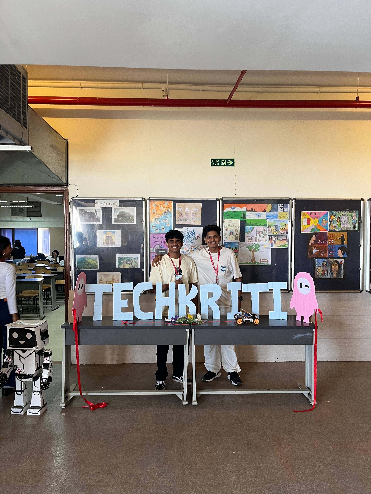
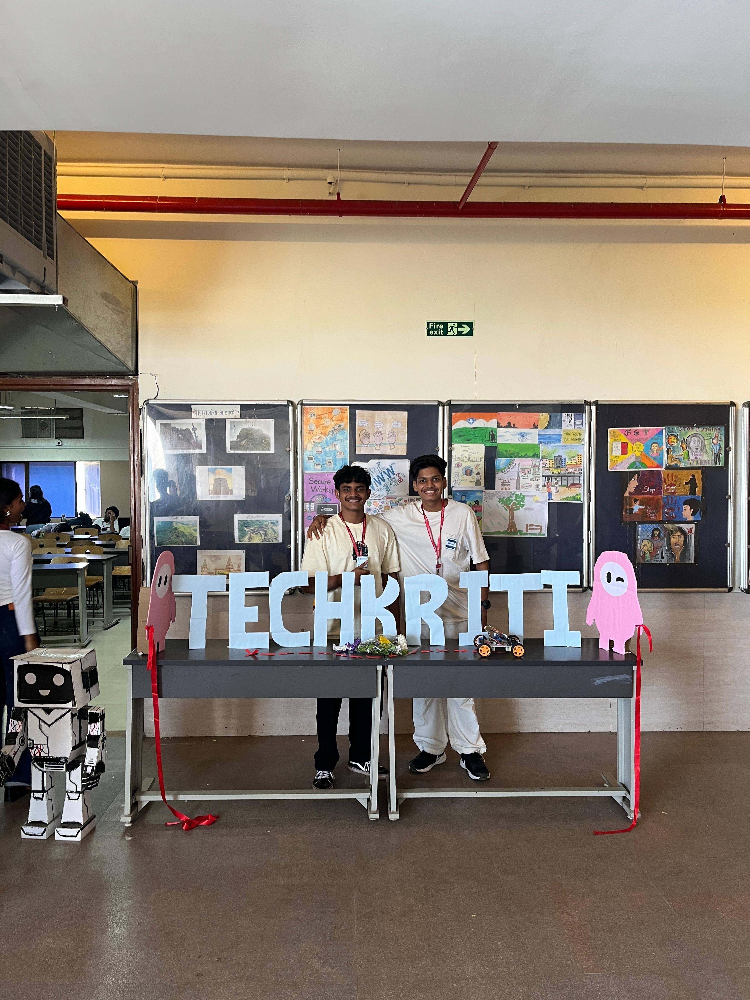

Techkriti, held on 28th January, is a college-level annual tech fest aimed at encouraging innovation, teamwork, and creativity among students. As the Head Organizer of the event, I was responsible for managing the entire execution and coordination of different activities, teams, and participants.
The event featured a range of engaging competitions and games such as:
My role involved everything from brainstorming event themes to assigning volunteers, arranging logistics, and ensuring smooth flow of the entire fest. The enthusiasm of participants and support from our team made the event a huge success and a memorable experience.
 
